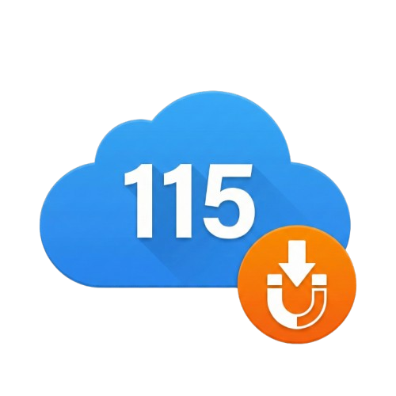

规则、任务与日志集中管理
这些设置会被后台任务和网页推送共同使用。
根目录填 0；目录列表中的 CID 也可在弹窗主页选择。
阈值只用于筛选；主视频、CD/Disc/Part 分片不会因体积小而删除。
格式：目录名:CID，例如：电影:123456789。
每行或用逗号分隔；扩展名可带或不带点。
默认包含 .html、.htm、.txt 等下载附带文件；移除某项即可保留该类型。
字幕默认在这里；若同一扩展名同时出现，保护规则优先。
默认为空。适合放入你确认无用的非视频扩展名；不会替代视频安全判断。
这里会保留最近任务的处理状态、错误和清理明细。